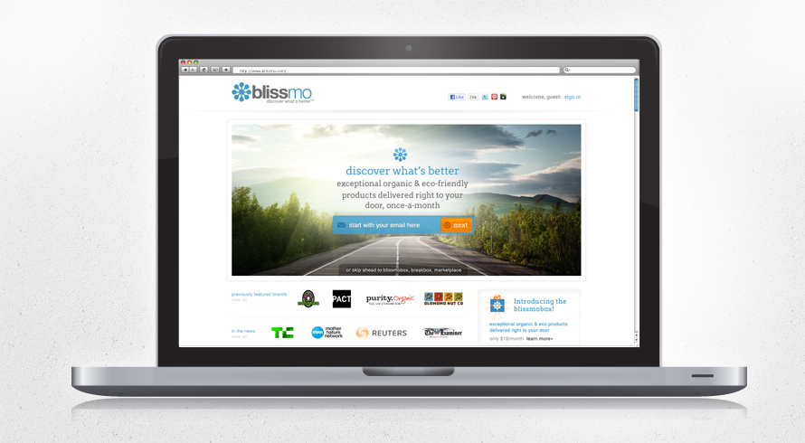
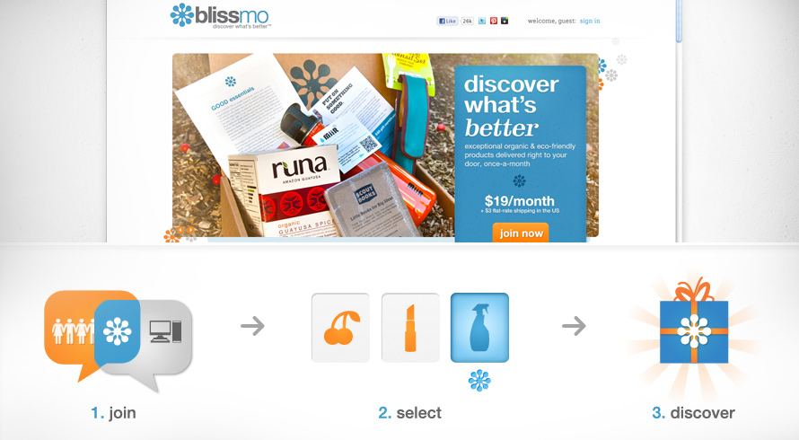
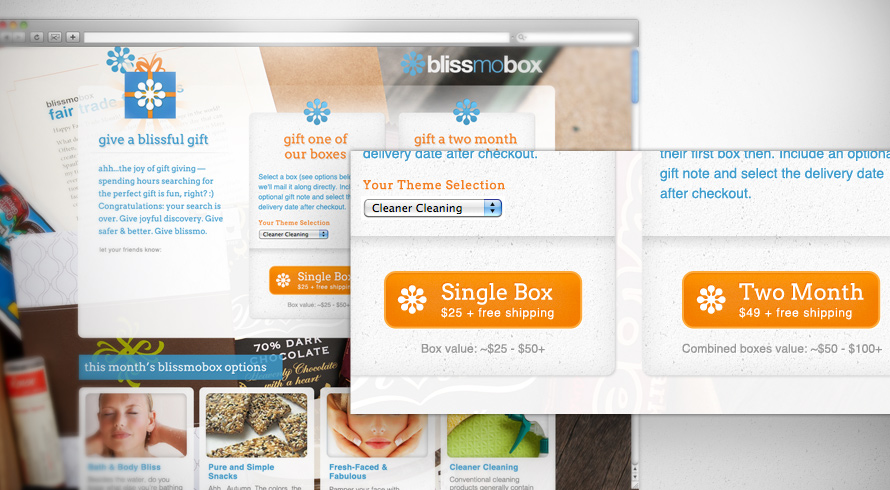
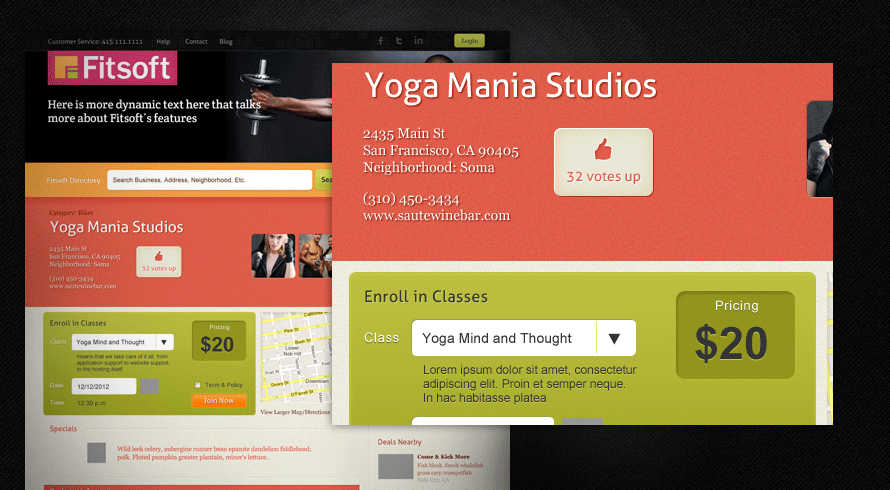
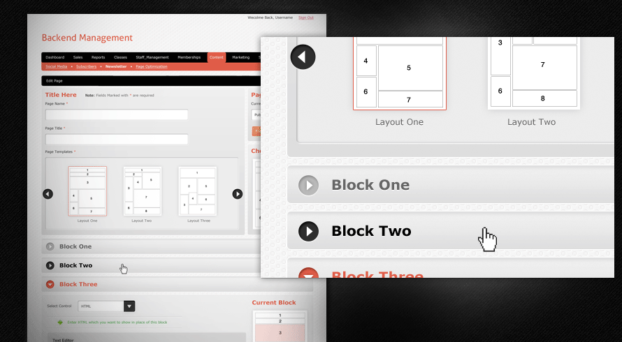
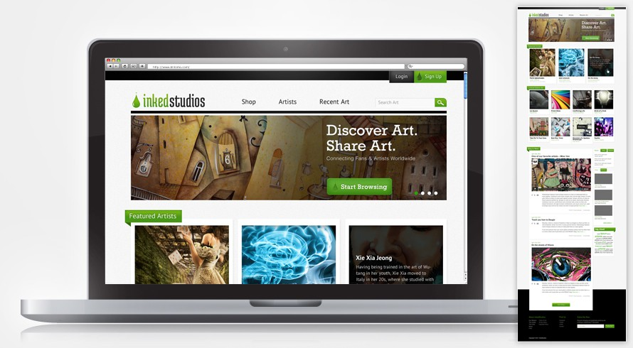
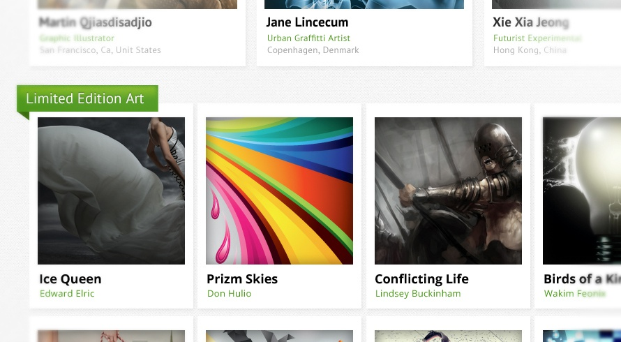
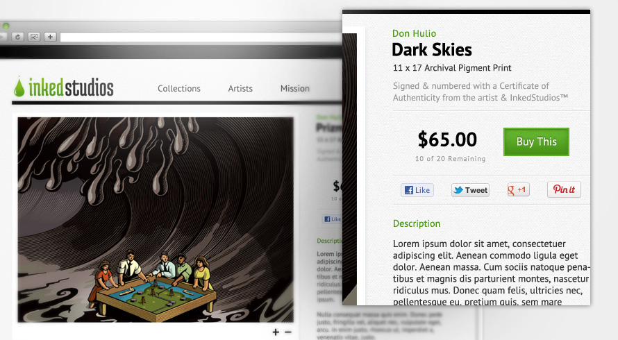

	<!DOCTYPE html>

<!-- paulirish.com/2008/conditional-stylesheets-vs-css-hacks-answer-neither/ -->
<!--[if lt IE 7]> <html class="no-js lt-ie9 lt-ie8 lt-ie7" lang="en"> <![endif]-->
<!--[if IE 7]>    <html class="no-js lt-ie9 lt-ie8" lang="en"> <![endif]-->
<!--[if IE 8]>    <html class="no-js lt-ie9" lang="en"> <![endif]-->
<!--[if gt IE 8]><!--> <html class="no-js" lang="en"> <!--<![endif]-->
<head>
	<meta charset="utf-8" />

	<!-- Set the viewport width to device width for mobile -->
	<meta name="viewport" content="width=device-width" />

	<title>Johnson Chen's Works</title>
			<link rel="icon" href="images/favicon.ico" type="image/x-icon"> 
			<link rel="shortcut icon" href="images/favicon.ico" type="image/x-icon"> 
	  
	<!-- Included CSS Files -->
	<link rel="stylesheet" href="stylesheets/foundation.css">
	<link rel="stylesheet" href="stylesheets/app.css">
	<link rel="stylesheet" href="stylesheets/jc-css-reset.css">
    
	<link rel="stylesheet" href="stylesheets/main.css">
	<link rel="stylesheet" href="stylesheets/jc-media.css">

	<!--[if lt IE 9]>
		<link rel="stylesheet" href="stylesheets/ie.css">
	<![endif]-->
	
	<script src="javascripts/modernizr.foundation.js"></script>
	
	<!-- googloe fonts -->
	<link href='http://fonts.googleapis.com/css?family=Anton' rel='stylesheet' type='text/css'>
	<!-- IE Fix for HTML5 Tags -->
	<!--[if lt IE 9]>
		<script src="http://html5shiv.googlecode.com/svn/trunk/html5.js"></script>
	<![endif]-->

<link href='http://fonts.googleapis.com/css?family=Asap:400,700,400italic,700italic' rel='stylesheet' type='text/css'>

		<style>
		 /* popup color */
		 	.reveal-modal-bg { opacity: 0.95 !important;} 
		 	filter: alpha(opacity=95); /* IE6-IE8 */
		
		</style>

</head>
<body>

<a class="nav top-bar" href="#start">
	<div class=triangle-up></div>
</a>

<div class="green-bar">
	<div class=white-johnson></div>
	<a href="#start" class="nav back-to-the-top right"></a>
	<ul class="row" style="max-width:800px;">
		<li><a class=active>Showcase</a></li>
		<li><a class="showcase2" href="sc2.html">Showcase2</a></li>
		<li><a href="photo.html">Photography</a></li>
		<li><a href="ee.html">Everything Else</a></li>
	</ul>

</div>

<div class=left-slide>
<div class="left-slide-content">


// this will be loaded from another file!!
<div class=row>
	<div class="six columns">
		<div class="row top_paddings">
			<span class=m-slider-info></span>
			<div class=m-slider>
				<div class=image-wrap id="image-1">
					
				</div>
				<div class=image-wrap id="image-2">
					
				</div>
				<div class=image-wrap id="image-3">
					
				</div>
				<div class=image-wrap id="image-4">
					
				</div>
				<div class=image-wrap id="image-5">
					
				</div>
				<div class=image-wrap id="image-6">
					
				</div>
				<div class=image-wrap id="image-7">
					
				</div>
			</div>
			
		</div>
	</div>
	<div class="six columns">
		<div class="row top_paddings">
				<div class=project-popup>
					<h2>TITLE OF THING HERE</h2>
					<span class=subtitle>print &nbsp; / &nbsp; web &nbsp; / &nbsp; branding</span>
				</div>
				<div class=popup-text>
				<p>This is a 11 inch by 17 inch concept map about the process of creating buildings through greener and more environmentally- friendly means, or sustainable architecture. On the map, important elements are bolder and bigger, while details and tertiary information are smaller and lighter.</p>
				<p>
This is a 11 inch by 17 inch concept map about the process of creating buildings through greener and more environmentally- friendly means, or sustainable architecture. On the map, important elements are bolder and bigger, while details and tertiary information are smaller and lighter.
				<a class=image-link data-image="5">Image5</a>
				
				<div class="m-slider-thumbs">
				</div>
				
				<h1><a class="close-left-slide close-popup" href="#"></a></h1>
				
				</p>
				</div>
		</div>
	</div>
</div>


</div>


</div>

<ul id="nav" class=hideble>
		<li style="display:none;"><a class="nav nav-point" href="#start" title="Next Section"><p>0</p></a><div class=clear></div><a href="#start" class="nav project-name"><p>Start page</p></a></li>

	    <li><a class="nav nav-point" href="#first" title="Next Section"><p>1</p></a><div class=clear></div><a href="#first" class="nav project-name"><p>o3 Bistro</p></a>

	    <li><a class="nav nav-point" href="#second" title="Next Section"><p>2</p></a><div class=clear></div><a href="#second" class="nav project-name"><p>Blissmo</p></a></li>

	    <li><a class="nav nav-point" href="#third" title="Next Section"><p>3</p></a><div class=clear></div><a href="#third" class="nav project-name"><p>Fitsoft</p></a></li>

	    <li><a class="nav nav-point" href="#fourth" title="Next Section"><p>4</p></a><div class=clear></div><a href="#fourth" class="nav project-name"><p>InkedStudios</p></a></li>

	    <li><a class="nav nav-point" href="#fifth" title="Next Section"><p>5</p></a><div class=clear></div><a href="#fifth" class="nav project-name"><p>Aslan Bikes</p></a></li>

	    <li style="display:none;"><a class="nav nav-point" href="#footer-slide" title="Next Section"><p>6</p></a><div class=clear></div><a href="#footer-slide" class="nav project-name"><p>Footer</p></a></li>
		<div class="arrow-up"></div>
		<div class="arrow-down"></div>
	</ul>


	<div class=about>
		<div class="about-content row" style="padding-top:40px;max-width:1200px;">
			<div class="four columns">
			
						<div class=johnson-s-photo>
							
						</div>
			
			</div>
			<div class="eight columns">
				<div class=row>
					<div class="five columns">
					</div>
					<div class="seven columns">
						<p class=padding15>Hey there, you. Yeah, you right there, looking at my portfolio site right this instant. If you want to contact me, email me at:</p>
					</div>
				</div>
				<div class="row about-email">
					<a href="mailto:firstnamejohnson@gmail.com?Subject=Hello%20There" alt="" class="johnson-email"><h2 class="">first&nbsp;name&nbsp;johnson<span>&nbsp;at&nbsp;</span>gmail<span>&nbsp;dot&nbsp;</span>com</h2></a>
				</div>
				<div class=row>
					<div class="five columns show-on-desktops">
					<p class="small-text"><em>Things I find annoying:</em> People that hate on Comic Sans and lets everyone know it &#8226; People who love Helvetica and lets everyone know it &#8226; Flickr's and iTunes's interface &#8226; Internet articles about the Top # of Inpiration/Mesmerizing [insert topic that helps your profession] List &#8226; Conforming to logo trends (aka everyone) &#8226; People who makes a list of things that annoys them &#61; super d-bags [wait a minute..].
					</p>
						<p class=small-text>
							About this site: Built upon Zurb's Foundation, with jquery scripts out the ying yang. I want to thank front-end developer, Michael Marakov, for figuring out all the javascript and animations and putting the structure of this website together. This is the fourth iteration of my online portfolio.
						</p>
					</div>
					<div class="seven columns">
					<p class="social">You can find me on <a href="http://pinterest.com/johnsoniscool/" target="blank">Pinterest</a>, <a href="https://twitter.com/#!/johnsoniscool" target="blank">Twitter</a> <span>(possibly NSFW)</span>, & <a href="http://www.linkedin.com/in/johnsonchen" target="blank">LinkedIn</a>.</p> <p>I'm also lurking on Flickr, Behanced, and DeviantArt, so catch me if you can.</p>
					</div>
				</div>
			
			</div>
		</div>
		<div class=row style="text-align:right;overflow:hidden;">
		</div>
			<a href="#" data-link="close-about" class=close></a>
	</div>
	
		

	
	<div id="start" class="slide hideble">
		<div class=row>
			<h1 class="main-logo johnson-s-logo"></h1>
			<ul class="main-menu hideble">
				<li><a href="#" class=active>Portfolio</a></li>
				<li><a href="#" class="strike">Blog</a></li>
				<li><a href="freebies.html" >Freebies</a></li>
				<li><a href="#" data-link="about">About/contact</a></li>
			</ul>
			
			<div class="green-line">
			</div>
			
			<ul class="sub-menu hideble">
				<li><a href="index.html" class=active>Showcase</a><div class="small-triangle"></div></li>
				<li><a href="sc2.html">Showcase2</a></li>
				<li><a href="photo.html">Photography</a></li>
				<li><a href="ee.html">Everything Else</a></li>
			</ul>
			

			<div class=clear></div>
			<p class="hello-text">
				<span class="hello-text-content">
					Real world projects, client work&mdash; as Will Ferrell might say &ldquo;Gets the people going!&rdquo; Below are a few selected client projects, ranging from print to web to things that fall in between the proverbial creative seat cushions.
				</span>
			</p>
			
			<div class="johnson-canvas showable row show-on-desktops">
				
				<div class="six columns showable ">
				<div class=cta_box>
						<div class="cta">Aww crap! I messed up the link. Can you put it back for me? <span>Click &amp; Drag &rarr;</span></div>
				</div>
					
				</div>
				<div class="six columns">
					
				</div>
				
			</div>
			
		</div>
		<a class="nav black-triangle hideble" href="#first .featured">&nbsp;
		</a>
		</div>
		
		
		
	<div id="first" class="slide hideble">
	<!--	<a class="nav top-bar-clone" href="#start">
			<div class=triangle-up></div>
		</a> -->

	
		<div id="jc-one" class="row padding100">
		<span class=showcase-number>Showcase 1 of 5</span>

		<div class="featured" id=first-slider> 
			
			
			
			
			

		</div>
		
		</div>
		
		<!-- description row -->
		<div class=row>

			<div class="five columns">
				<div class=johnson-set-paddings1>
					<h2>o3 Bistro &amp; Lounge</h2>
					<span class=subtitle>brand identity &nbsp; / &nbsp; print design</span>
				</div>
			</div>
			
			<div class="seven columns">
				<div class=johnson-set-paddings2>
					<p>
						This asian fusion bistro next to the San Francisco City Hall wanted to leverage it's prime location towards politicians &amp; symphony goers without putting off young professionals. Working off the interior designer's decor plans, typeface and colors were chosen to compliment the inside, as were the creations of the menus and logo. 
   					</p>
					<span class=expand><a href="#" class="" data-reveal-id="myModal2" data-animation="fade">Expand and View More of This Project in Detail</a></span>
				</div>
			</div>
			
			
		</div>
		<!-- end description row -->
		
	</div>
	
	<div id="second" class="slide hideble">
	
		<div id="jc-second" class="row padding100">
		<span class="showcase-number white">Showcase 2 of 5</span>

		<div class="featured" id=first-slider> 
			
			
			
			
			
			
			
			
		</div>
		
		</div>
		
		<!-- description row -->
		<div class=row>

			<div class="five columns">
				<div class=johnson-set-paddings1>
					<h2 class=blackshadow>Blissmo</h2>
					<span class="subtitle white">print &amp; web &nbsp; / &nbsp; branding &nbsp; / &nbsp; photo</span>
						<span class="subtitle uc white">&#9649; Currently in development &#9649;</span>
				</div>
			</div>
			
			<div class="seven columns">
				<div class=johnson-set-paddings2>
					<p class=white>
						Blissmo.com is an online service whose goal is to help consumers discover sustainable and eco-friendly products. With a logo already on hand, they needed a brand identity that conveys friendliness while maintaining a pro-fessional service. Print &amp; web collateral was created, as well as website, implementation of colors &amp; typefaces and product photos were taken.
					</p>
					<span class=expand><a href="#" class="white" data-reveal-id="myModal3" data-animation="fade">Expand and View More of This Project in Detail</a></span>
				</div>
			</div>
			
		</div>
		<!-- end description row -->
		
	</div>
	
	<div id="third" class="slide hideble">
		<div id="jc-third" class="row padding100">
		<span class=showcase-number>Showcase 3 of 5</span>

		<div class="featured" id=first-slider> 
			
			
			
			
			
		</div>
		
		</div>
		
		<!-- description row -->
		<div class=row>

			<div class="five columns">
				<div class=johnson-set-paddings1>
					<h2>Fitsoft</h2>
					<span class=subtitle>web design &nbsp; / &nbsp; brand identity</span>
						<span class="subtitle uc">&#9649; Currently in development &#9649;</span>					
				</div>
			</div>
			
			<div class="seven columns">
				<div class=johnson-set-paddings2>
					<p>
						Fitsoft.com is a web management system for small to big gyms/facility operations in the fitness industry. Aside from also aiming to be the go-to search directory for fitness consumers, their ambitious strategies have since created a bunch of web content and backend CMS that needs a cohesive identity to bring them all together.
					</p>
					<span class=expand><a href="#" class="" data-reveal-id="myModal4" data-animation="fade">Expand and View More of This Project in Detail</a></span>
				</div>
			</div>
			
		</div>
		<!-- end description row -->
		
	</div>
	
	<div id="fourth" class="slide hideble">
		<div id="jc-fourth" class="row padding100">
		<span class="showcase-number white">Showcase 4 of 5</span>

		<div class="featured" id=first-slider> 
			
			
			
			
			
		</div>
		
		</div>
		
		<!-- description row -->
		<div class=row>

			<div class="five columns">
				<div class=johnson-set-paddings1>
					<h2 class=blackshadow>Inked Studios</h2>
					<span class="subtitle white">web &nbsp; / &nbsp; UI &nbsp; / &nbsp; brand identity</span>
						<span class="subtitle uc white">&#9649; Currently in development &#9649;</span>
				</div>
			</div>
			
			<div class="seven columns">
				<div class=johnson-set-paddings2>
					<p class=white>
						Inkedstudios.com aims to build an online art community while promoting up-and-coming artists, particularly those of urban &amp; street art. With the ability for artist to create their own galleries and have viewers collect or share them, a easy-to-follow interface that's approachable and flexible is key in the early stages of the site.
					</p>					
					<span class=expand><a href="#" class="white">Expand and View More of This Project in Detail</a></span>
				</div>
			</div>
			
		</div>
		<!-- end description row -->
	</div>

	<div id="fifth" class="slide hideble">
		<div class="row padding100">
		<span class=showcase-number>Showcase 5 of 5</span>

		<div class="featured" id=first-slider> 
			
			
			
			
		</div>
		
		</div>
		
		<!-- description row -->
		<div class=row>

			<div class="five columns">
				<div class=johnson-set-paddings1>
					<h2 class=blackshadow>Aslan Bikes</h2>
					<span class="subtitle white">logotype</span><br/>
						<span class="subtitle uc white">&#9649; Project Discontinued &#9649;</span>
				</div>
			</div>
			
			<div class="seven columns">
				<div class=johnson-set-paddings2>
					<p class=white>
							Logo/headbadge for a couple of entrepreneurs looking to start up a bicycle product line (which ultimately fell out). Logo implementation and mock-ups needed for investor pitches. While jumping on the fad of singlespeed bikes, the goal was to create a symbol of track cycling with that of &#34;heat of a lion.&#34;
					</p>
					<span class=expand white><a href="#" class="white">Expand and View More of This Logo's Process</a></span>
				</div>
			</div>
			
		</div>
		<!-- end description row -->
	</div>

	<div id="footer-slide" class="slide hideble">
		<div class=row>
		
			<div class=green-triangle>
			</div>
			<div style="text-align:center;">
				<p>Thanks for looking. I have a couple more projects I want to show, but its current in secret development so I can't share yet. Anywho, best way to contact me is to email me at:</p>
					<a href="mailto:mailto:firstnamejohnson@gmail.com?Subject=Hello%20There" alt="" class="johnson-email"><h2 class="">first&nbsp;name&nbsp;johnson<span>&nbsp;at&nbsp;</span>gmail<span>&nbsp;dot&nbsp;</span>com</h2></a>
				<p>Be sure check out the rest of my stuff in <a href="sc2.html" class=one>Showcase2</a>, <a href="photo.html" >Photography</a>, &amp; <a href="ee.html">Everything Else</a> as those pages shows projects that I consider of a more independent nature.</p>
			</div>
		
			<a class="nav back-to-the-top-of-the-page" href="#start">
			
				<div>
					Back to the Top<br />
					of the Page
				</div>
				
			</a>
		
		</div>
	</div>
	
	
	
	<div id="homepage" class="showable">
		<div class=row>
			<h1 class="main-logo johnson-s-logo"></h1>
			
			
			<div class="green-line">
			</div>
			

			

			<div class=clear></div>
			<p class="hello-text">
				<span class="hello-text-content">
					Hey there, fellow internet enabler. The name is Johnson, and I'm a graphic/web designer in the San Francisco Bay Area. This is the online showcase of my portfolio. Since you're already here, check it out.
				</span>
			</p>
			
			<div class="johnson-canvas row show-on-desktops" style="margin-top:50px;">
				
				<div class="six columns ">
				<div class=cta_box>
						<div class="cta">Aww crap! I messed up the link. Can you put it back for me? <span>Click &amp; Drag &rarr;</span></div>
				</div>
					
				</div>
				<div class="six columns">
					
				</div>
				
			</div>
			
		</div>
		</div>
	
	<!-- container -->


	<!-- Included JS Files -->
	<script src="javascripts/jquery.min.js"></script>

	<script type="text/javascript" src="javascripts/jquery.parallax-1.1.js"></script>
	<script type="text/javascript" src="javascripts/jquery.scrollTo-1.4.2-min.js"></script>
	<script type="text/javascript" src="javascripts/jquery.localscroll-1.2.7-min.js"></script>
	<script type="text/javascript" src="http://ajax.googleapis.com/ajax/libs/jqueryui/1.8.9/jquery-ui.min.js"></script>

	<script type="text/javascript" src="javascripts/jquery.easing.1.3.js"></script>
	<script type="text/javascript" src="javascripts/jquery.scrollorama.js"></script>
	<script type="text/javascript" src="javascripts/jquery.scrolldeck.js"></script>

	<script src="javascripts/foundation.js"></script>
	<script src="javascripts/app.js"></script>
	
	<script>

function getUrlVars() {
    var vars = {};
    var parts = window.location.href.replace(/[?&]+([^=&]+)=([^&]*)/gi, function(m,key,value) {
        vars[key] = value;
    });
    return vars;
}


	$(document).ready(function () {
		
			RepositionNav();

	

	$(window).resize(function(){

		RepositionNav();

	});	

		
		$('#start').parallax("50%", 0, 0.1, true);
		$('#first').parallax("50%", 0, 0.2, true);
		$('#second').parallax("50%", 0, 0.1, true);
		$('#third').parallax("50%", 0, 0.1, true);
		$('#forth').parallax("50%", 0, 0.3, true);
	
		var deck = new $.scrolldeck({
			slides: '.slide',
			buttons: '.nav',
			easing: 'easeInOutExpo'
		});


	 
         $('.featured').orbit({
			 animation: 'horizontal-push',                  // fade, horizontal-slide, vertical-slide, horizontal-push
			 animationSpeed: 800,                // how fast animtions are
			 timer: false, 			 // true or false to have the timer
			 resetTimerOnClick: false,           // true resets the timer instead of pausing slideshow progress
			 advanceSpeed: 4000, 		 // if timer is enabled, time between transitions 
			 pauseOnHover: false, 		 // if you hover pauses the slider
			 startClockOnMouseOut: false, 	 // if clock should start on MouseOut
			 startClockOnMouseOutAfter: 1000, 	 // how long after MouseOut should the timer start again
			 directionalNav: true, 		 // manual advancing directional navs
			 captions: true, 			 // do you want captions?
			 captionAnimation: 'fade', 		 // fade, slideOpen, none
			 captionAnimationSpeed: 800, 	 // if so how quickly should they animate in
			 bullets: true,			 // true or false to activate the bullet navigation
			 bulletThumbs: false,		 // thumbnails for the bullets
			 bulletThumbLocation: '',		 // location from this file where thumbs will be
			 afterSlideChange: function(){}, 	 // empty function 
			 fluid: true                         // or set a aspect ratio for content slides (ex: '4x3') );
     });

	 	


	 $("1.expand").click(function (e) {
		e.preventDefault();
		$(".left-slide").animate({"width":"100%"}, 1000);
		$(".left-slide-content").load("left-slide.html");
		$("#nav").fadeOut(500);
		$(".slide").fadeOut(3000,function () {$(".left-slide").css("position","static");});
		
	 });
	 $(".close-left-slide").click(function (e) {
		e.preventDefault();
		$("#nav").fadeIn(500);
		$(".slide").fadeIn(100,function () {$(".left-slide").css("position","fixed");});
		$(".left-slide").animate({"width":"0"}, 1000);
		window.location = "#first";

		});
		
	  $("#nav li").hover(function () {
		
		$(this).find(".project-name").stop().animate({width:"150px"});
	  
		}, function () {

		$(this).find(".project-name").stop().animate({width:"0px"});
		
		
		});	  
	 
	 $("a[data-link='about']").click(function (e) {
		e.preventDefault();
		var w = $(window).width();
		if (w > 700) { var l = '620px'; }
		if (w > 1200) { var l = '520px'; }
		if (w <= 960) { var l = '850px'; }
		$(".about-content").hide(0);
		$(".about").stop().animate({'height':l},700);
		$(".about-content").delay(200).fadeIn(1500);
		
	 });
	 $("a[data-link='close-about']").click(function (e) {
		e.preventDefault();
		$(".about").css({'margin-top':'0px'});
		$(".about").stop().delay(0).animate({'margin-top':'-700px'},1000);
		$(".about").stop().delay(500).animate({'height':'0px'},0);
		$(".about").delay(500).animate({'margin-top':'0px'},0);

	 });

	
	// m-slider init
	pictures = $(".m-slider div");
	pics = $(".m-slider div img");
	pictures.hide();
	info = $(".m-slider-info");
	info.text("1 of "+pictures.length);
	$(".m-slider div:first-child").show();
	// generate thumbnails and links
	thumb_box = $(".m-slider-thumbs");
	for (i=1; i <= pictures.length; i++) {
	
		thumb_box.append("<a data-image=" + i + " class='m-img image-link'></a>");
		
	}
	
	
	 $(".image-link").live("click", function (e) {
		e.preventDefault();
		n = $(this).attr("data-image");
		info.text(n+" of "+pictures.length);
		$(".m-slider div").hide();
		$(".m-slider div:nth-child(" + n + ")").fadeIn(500);
	 });
	 
	 $(window).scroll(function () { 
		y = $(window).scrollTop();
		if (y >= 690) {
			$(".top-bar-clone").hide(0);		
			$(".top-bar").show(0);
			$(".about").stop().delay(500).animate({'height':'0px'},0);			
		} else {
			$(".top-bar-clone").show(0);		
			$(".top-bar").hide(0);              
		}
		//$(".top-bar").html(y);
	 });


		//$(".main-logo").css("margin-left","-1000px");
		$(".main-logo").animate({"margin":"auto"},1000);
		//$(".black-triangle").hide(0);
		//$(".black-triangle").delay(7000).fadeIn(1000);
		
		var text_box = $(".hello-text span1");
		var text = text_box.text();
		text_box.html("");
		var counter = 0;
		var exit = text.length;
		l=20;
		
		function type() {
			text_box.append(text.substr(counter,1));
			if (text.substr(counter,1)==' ') {l=30;} else {l=20;} // If space then wait longer
			if (text.substr(counter,1)=='.') {l=100;}
			counter ++;
			if (counter < exit) setTimeout(type, l);
		}
			setTimeout(type, 100);
		
			$(".arrow-up").click(function () {
				link = $(".current-nav");				
				current_link = link.attr("href");
				before_link = link.parent().prev().find("a").attr("href");
				$(window).scrollTo(before_link,1000);
			});
			$(".arrow-down").click(function () {
				link = $(".current-nav");				
				current_link = link.attr("href");
				next_link = link.parent().next().find("a").attr("href");
				$(window).scrollTo(next_link, 1000);
			});

			$(".top-bar").hover(function() {
				$(".green-bar").stop().animate({top:'0px'});
			}, function () {
				//$(".green-bar").stop().animate({top:'-50px'});			
			});
			$(".green-bar").hover(function() {},
			function () {
				$(".green-bar").animate({top:'-70px'});			
			});
		$(".showcase23").click(function () {
						$(".slide").animate({left:"-2000px"},1000);
						
						$(".slide").delay(3100).animate({left:"0px"},3000);
						var a = settimeout(function () {"$('.slide').css('left','2000px');"},3000);
		});

		
		$(".hideble").hide();
		$(".p").draggable();
		
		$(".before").droppable({
			 drop: handleDropEvent
		});
		
		function handleDropEvent( event, ui ) {
		  var draggable = ui.draggable;
		  $(".p").hide();
		  $(".before").attr("src", "images/hp-project-after.png")
		  //$(".johnson-canvas").fadeOut(500);
		  $(".hideble").fadeIn(10);
		  setTimeout("$('.johnson-canvas').remove();",1000);
		  $(".showable").animate({"margin-left": "-3000px"},2000);
		  //$(".showable").fadeOut(1500);
		  $(".slide").animate({"left": "0px"},2000);

		  //alert( 'The square with ID "' + draggable.attr('id') + '" was dropped onto me!' );
		}

	var x=0;
	var y=0;
	var z=1170;
	var n=10.1;
	
	$(".cta_box").hide();
	$(".cta_box").fadeIn(2000);
	function vibrate() {
		z=z+2;
		n=n-0.1;
		if (x==0) {y=n;x=1;}
		if (y>0) {y=-n;} else {y=n;}
		$(".cta").animate({"margin-top": y -10 + "px"},z,function () {vibrate();});
		
	}
	
	

var skip_intro = getUrlVars()["skip_intro"];
if (skip_intro == 'yes!') {
		  $(".hideble").show();
		  $('.johnson-canvas').remove();
		  $(".showable").hide();
		  //$(".slide").css("left", "0px");
		  $(".slide").animate({"left": "0px"},2000);
}


vibrate();
	
$(".modal-fix").height($(window).height()-50);
	
	//this stuff fixes hidden modals
  $(".reveal-modal").hide();	
	$('[data-reveal-id]').bind('click', function() {
    $(".reveal-modal").show();  
  });
	$('.reveal-modal-bg').bind('click', function() {
    $(".reveal-modal").hide();  
  });
	$('.reveal-modal').bind('click', function() {
    $(".reveal-modal").hide();  
  });
	
	
	});

function hidebackgrounds() {
    $(".reveal-modal").hide();  
	
}
	</script>

<div id="myModal2" class="reveal-modal showcase">
	<div class="row">
			<div class="seven column j-pics">
				
					<p>1&nbsp; outside signage: 400 led lightbox, steel/alumnium metal, laser cut, black acrylic</p>
				
					<p>2&nbsp; sketches after chosen direction</p>
				
					<p>3&nbsp; three main variations, went with the left one</p>
				
					<p>4&nbsp; final logo with two different ways to apply it</p>
				
				
					<p>5&nbsp; O3 business cards, gift certificate and a few menus</p>
				
					<p style="max-width:500px; margin:auto;">6&nbsp; bonus pic: photo-retouched and manipulated a rectangle buddha image into a square-ish frame with as less cropping as possible. Many variations and time spent. 5 x 6 feet.    </p>
					
				<a class="close-reveal-modal pt2" href="#jc-one">&#215; &nbsp; <span>Close Project</span></a>
				
			</div><!--end column-->
	
			<div class="five column">
				<div class=project-popup>
					<h2>O3 Bistro &amp; Lounge</h2>
						<span class=subtitle>print design &nbsp; / &nbsp; brand identity</span>
				</div><!--end project-popup-->
				<div class=popup-text>
					<p>This asian fusion bistro next to the San Francisco City Hall wanted to leverage it's prime location towards politicians &amp; symphony goers without putting off young professionals. Working off the interior designer's decor plans, typeface and colors were chosen to compliment the inside, as were the creations of the menus and logo.</p>
				<h3>Logo Objective</h3>
				<p>While the bistro serves food of asian influence, O3 does not pretend to be authentic asian cuisine. The bistro's intent was to be more of a modern and contemporary lounge/bar/bistro atmosphere, with the asian fusion food being the unique selling point. With that in mind, we agreed that the brandmark should be something that is contemporary, but also shows a nod to eastern aesthetics.</p>
				
				<h3>Ideation</h3>
				<p>Letting my mind free form in the early sketches, the eastern aesthetics was applied heavily. Since O3 is pronounced, <em>OH three</em>, I was very draw into emphasizing the letter &#8220;0&#8221;. Circle shapes are common in asian writing, so a less geometric &#8220;O&#8221; was the next step. As for the &#8220;3&#8221;, I chose to go the opposite direction and back to the future with a geometric &#8220;3&#8221; (font Gotham Black).   </p>
						
				<p>Eventually three distinct directions were realized &nbsp;<span class="popup-caption">see image 3</span>. The left one fell along the lines of the period table element, Ozone, which abbreviates to O3. I should probably mention that the name of the bistro comes from the fact that one of the bistro's partners own two separate restaurants in the city called Ozone and Ozone 2 [with no relations to O3 other than namesake]. Continuing along, the middle option's direction goes 100% into asian influence. While not completely on target with the original objective, I felt that a solution could be found with future permutations. The last one aimed at more geometric shapes, with the letters forming bold, thick lines, while the line over the &#8220;0&#8221; help slighting dissolve the letters into a foreground/background interaction. </p>
				
				<p>After much discussion, the periodic table element direction was the one chosen for more exploration.</p>

				<h3>The Logo</h3>
				<p>After some more refining of shapes and new obstacles addressed (such as the outdoor signage having to be a retangle shape), the O3 identity is realized into two variations of the same graphic mark. The rectangle version is reserved for mediums that need O3 to have instant recognition and places where white space is restricted, while the O3 that is cut of to the bottom right side of any canvas is reserved for mediums that allow for more white space interaction. </p>
				
				<p>In terms of color of the logo, the gray is derived from the outdoor signage maker's recommendation to ease the making the sign. For the type used on the menus and other collateral, a orange-bronze color accentuate the interior decor and atmosphere. There is also a orange gradient version of the logo for projects that need something more vibrant.</p>
				
				<p>The typefamily used is Myriad Pro, because the condensed font exudes prominence while being approachable. Also add that fact that the rest of Myriad Pro is a font that the O3 marketers have easy access to it when they need to write something out on Microsoft Word. </p>  
				
				<h3>Implementation</h3>
				<p>The two logo variations made it very flexible to apply the identity onto print and and web/digital collateral. The non-boxed logo interacts with supporting typographic elements. It can be bold on a business card, or it can play second fiddle in on the dinner menu. The boxed logo serves well for internet social networks or usage as an emblem. Check out everything in it's entirety for yourself the next time you're near San Francisco's City Hall; <em>O3 Bistro &amp; Lounge</em>.</p>				
				
				</div><!--end popup-text-->	
			</div><!--end column-->
	
	</div><!--end row-->
			<a class="close-reveal-modal" href="#jc-one">&#215;</a>
</div><!--end modal-->


<div id="myModal3" class="reveal-modal showcase">
	<div class="row">
	
			<div class="seven column centered j-pop">

				<div class=project-popup>
					<h2>blissmo</h2>
						<span class=subtitle>print &amp; web &nbsp; / &nbsp; branding &nbsp; / &nbsp; photography</span>
				</div><!--end project-popup-->
				<div class=popup-text>
					<p>Blissmo.com is an online service whose goal is to help consumers discover sustainable and eco-friendly products. With a logo already on hand, they needed a brand identity that conveys friendliness while maintaining a professional service. Print & web collateral was created, as well as website, implementation of colors & typefaces and product photos were taken.</p>
					
				<h3>Overview</h3>
				<p>When I started at blissmo, they were a wordpress-powered daily deal site with a logo. I was then tasked to do some design work for their newly created monthly-subscription box of eco-products, <em>blissmobox</em>. Later on, the daily deals were to be revamped in to a e-commerce marketplace. Along the way, I worked on the brand identity to bring the multiple blissmo products together.  </p>						

				<h3>Initial Challenges</h3>
				<p>Biggest obstacle at the start was figuring out who the target audience was, as there was no official data or statistics to draw from the blissmo daily deals. Of course, one can surmise  that the audience are people who are into eco-friendly products, but that's only slightly less ambiguous than saying everybody. After some discussion and analyzing the social media fan pages (i.e. Facebook), it was decided the opinion leaders and people the brand shoould convey more to were women, ages 25 to 40, American. Besides interest from people in urban cities, there also seem to be interest from people in middle America.</p>						
				
				<p>Apart from the target, I was also allowed great flexibility in my design process. With the only requirements being that I keep the logo the same and to use more white color [sic], the way I handle the initial blissmo branding would set the tone for future blissmo projects. With that in mind, I set up checks and balances to stop myself from frivolous brand sidetracking, and to get feedback from peers accordingly.     
								
				<h3>the blissmobox</h3>
				<p>The blissmobox is a box of sustainable/eco-friendly products that's delivered monthly via a subscription-based business model. The middle of every month, the recipient has a few themed boxes to choose from, but they do not get to know what is in the box until he/she opens the box in person at the beginning of the next month.<br/><br/>  </p>		

				
						<p class="caption">blissmobox homepage: big images of the products inside previous blissmoboxes to entice the viewer into subscribing</p>

				
						<p class="caption">quick glance of the process to getting a blissmobox </p>

				
						<p class="caption">complimentary colors; bright call-to-action button over a cool background makes the button pop out</p>

				
						<p class="caption">selecting a box and subscription plan page</p>

				
						<p class="caption">some of the original sketch concepts of the physical blissmobox, with no budget restrictions</p>

				
						<p class="caption">box design, narrowed down with budget and practicality in mind</p>

				
						<p class="caption">chosen box design, space left for address label</p>

				
						<p class="caption">racks on racks on racks? Nope. Box on box on box, out the door</p>

				
						<p class="caption">blissmobox flyer insert, with info of the products inside the box</p>

				
						<p class="caption">each month had about three different box options</p>

				
						<p class="caption">taking pictures of the past months' blissmoboxes. See the photo section of my portfolio for more details</p>

				<h3>branding motifs</h3>
				<p>You might have noticed some of the blissmo branding themes in the images above. First, I looked for a color to compliment the logo's blue. Some designers might find that orange is too obvious a solution, but whose to say that the obvious solution is a bad design solution? The brand needed something to bring more energy to the much reserved feel of the blue. The orange is applied carefully; used to draw attention to specific elements, or brighten up an overly blue layout. </p>	
				
				<p>While I did not create the blissmo logo, I decided to give the bloom-shaped brandmark a prominent position in the brand identity. It works well as a stand-alone emblem, a sort of &#8220;seal of approve&#8221; for products that are deemed eco-friendly, if you will. </p>	

				
						<p class="caption">also created were supporting twirling blooms graphic for web elements that need a bit more attention</p>
				
				<h3>blissmo market</h3>
				<p>With a good audience built into the blissmobox and the daily deals, the next big step for blissmo was to turn the daily deals into a full blown e-commerce marketplace for sustainable/eco-friendly products. for that, a few new elements to the blissmo identity will be needed. [Project currently in development] </p>		

				
						<p class="caption">frontpage for the blissmo market. One big featured product, while the other products are separated into three categories</p>

				
						<p class="caption">single product page. Notice the new brand identity elements</p>

				
						<p class="caption">the slab-serif, Arvo, is added to the brand identity as blissmo's secondary font. also new are a set of eco icons and incorporation of the blissmo bloom inside high-priority buttons  </p>

				
						<p class="caption">while Helvetica is a good font, it lacks personality (which is also why people love it). Arvo, on the other hand, gives the brand's body text a bit more approachability without looking amateur  </p>

				
				
						<p class="caption">icons represent certain attributes that a product being sold via blissmo has. Will also be used for other blissmo branding</p>
						
				
				<h3>Conclusion</h3>
				<p>In conclusion, there is no conclusion. I feel that the brand identity done here succeeds in portraying a sense of friendly professionalism without falling into cliches of what eco-friendly branding should be (i.e. THE COLOR GREEN AND OVERUSED LEAF SHAPES). The brand's web and print designs are flexible enough to encompass a good variety of future blissmo projects. At least until there is refined research and data into the target demographic, in that case, the branding strategy and identity will need some revisions.  </p>		


				<a class="close-reveal-modal pt2" href="#jc-second">&#215; &nbsp; <span>Close Project</span></a>
				</div><!--end popup-text-->	
			</div><!--end column-->
	
	</div><!--end row-->
			<a class="close-reveal-modal" href="#jc-second">&#215;</a>
			
</div><!--end modal-->

<div id="myModal4" class="reveal-modal showcase">
	<div class="row">
	
			<div class="seven column centered j-pop">

				<div class=project-popup>
					<h2>Fitsoft</h2>
						<span class=subtitle>web design &nbsp; / &nbsp; brand identity</span>
				</div><!--end project-popup-->
				<div class=popup-text>
					<p>Fitsoft.com is a web management system for small to big gyms/facility operations in the fitness industry. Aside from also aiming to be the go-to search directory for fitness consumers, their ambitious strategies have since created a bunch of web content and backend CMS that needs a cohesive identity to bring them all together.</p>
					
				<h3>Overview</h3>
				<p>This project is currently still in development, so I can't disclose too much on how the brand identity and UI relate the Fitsoft marketing strategies and such, but I will explain what I'm limited to. Fitsoft is made up of two main directions: first direction is a web &amp; mobile app platform for gym/fitness facilities to manage all their activities and website content, all in one digital space. Second part of Fitsoft is to create a search directory for local people to find gyms and classes. Combined, it creates a eco-system of fitness businesses and fitness customers, all under the umbrella of Fitsoft.</p>						

				<h3>Obstacles / Direction</h3>
				<p>In a broad and general perspective, the targets for Fitsoft are people who like exercising and the businesses that provide exercising activities. As I've learned in school, selling your product to businesses (also known as &#8220;b to b&#8221;) has distinct differences compared to selling to consumers (a.k.a. &#8220;b to c&#8221;). I'll admit, creating a brand identity in both <em>b to b</em> and <em>b to c</em> is quite a hard large task to excel in, especially working with limited resources for a product that is still in a inchoate state (in pre-beta development).</p>
				
				<p>After comprehending the situation and limitations, I decided to put the majority of the time to focus on the Fitsoft Directory (the product for consumers). The goal was now to emphasis the <em>colors</em> of Fitsoft, as and less of the logo of Fitsoft. The thought process behind it was that it is more flexible to apply color to the developing Fitsoft business management platform that it was to establish too many graphical rules right out the door.  
				</p>						
				
				<h3>Branding Themes</h3>
				<p><em>What does color does one think of when talking about fitness and exercise?</em> That was one of the first questions I asked myself. What color appeals to people who practice a calm activity like yoga, AND those of the more physical mixed martial arts? The solution was not just a specific color, but a specific color palette.   </p>

				<p>With some image searches, article readings, and color palette sites like <em>kuler dot com</em>, the five colors of Fitsoft was found. The key colors are the red-orange and orange, while the rest are more secondary in usage (more of accents colors). The reason being that the red-orange and orange can fit in more universally when talking about a range of exercises. The colors also might bring up a <em>Gestalt effect</em> for consumers, as the color combined with texture patterns conjure up reminders of padded walls/mats that are usually associated with fitness activities.<br/><br/></p>

				
						<p class="caption">the Fitsoft color palette <br/>(will be a reoccurring graphic in the brand's designs)</p>

				<p>As for the Fitsoft logo (created by another designer) works solidly with all the Fitsoft projects, but is very self containing logo. That attribute works extremely well for the Fitsoft business platform. With the directory, there will be other visual elements in place to offset the logo. </p>

				<p>As for typefaces, the logo and print collateral's typeface family is Franklin Gothic. Having traditional forms in it's alphabets' shapes, it compliments the Fitsoft logo's shapes. For the internet, web-optimized fonts such as Aller and Crete Round are used. Aller is reminiscent of Franklin Gothic, though more playful (which works with the website layouts). Crete Round is used sparingly for emphasis. </p>

				
						<p class="caption">logo on magenta (primary), on cream texture (alternative), and in black &amp; white (grayscale)</p>

				
						<p class="caption">typefaces: Aller on top, Crete Round on bottom</p>
				

				<h3>Fitsoft Directory</h3>

				<p>fake text here fake text here fake text here fake text here fake text here fake text here fake text here.</p>
				
				
						<p class="caption">directory homepage. Note the big images and the color pattern bar.	 </p>

				
						<p class="caption">search results page; Some UI Designers might suggest to condense the top header image. I disagree. Until a repeated viewership is established for the Fitsoft Directory, the big image right now help serve as a graphical enhancement for the brand identity</p>

				
						<p class="caption">happy little fitsoft directory map pins</p>

				
						<p class="caption">a business's page via the search results; closeup on the ability to sign up for one of their classes, right on the page </p>


				<h3>Fitsoft Business Platform</h3>

				<p>Mobilefake text here fake text here fake text here fake text here fake text here fake text here fake text here.</p>

				
						<p class="caption">business platform homepage </p>

				
						<p class="caption">icons for the main targeted fitness industries; for general use</p>


				<a class="close-reveal-modal pt2" href="#jc-third">&#215; &nbsp; <span>Close Project</span></a>
				</div><!--end popup-text-->	
			</div><!--end column-->
	
	</div><!--end row-->
			<a class="close-reveal-modal" href="#jc-third">&#215;</a>
			
</div><!--end modal-->


</body>

</html>
